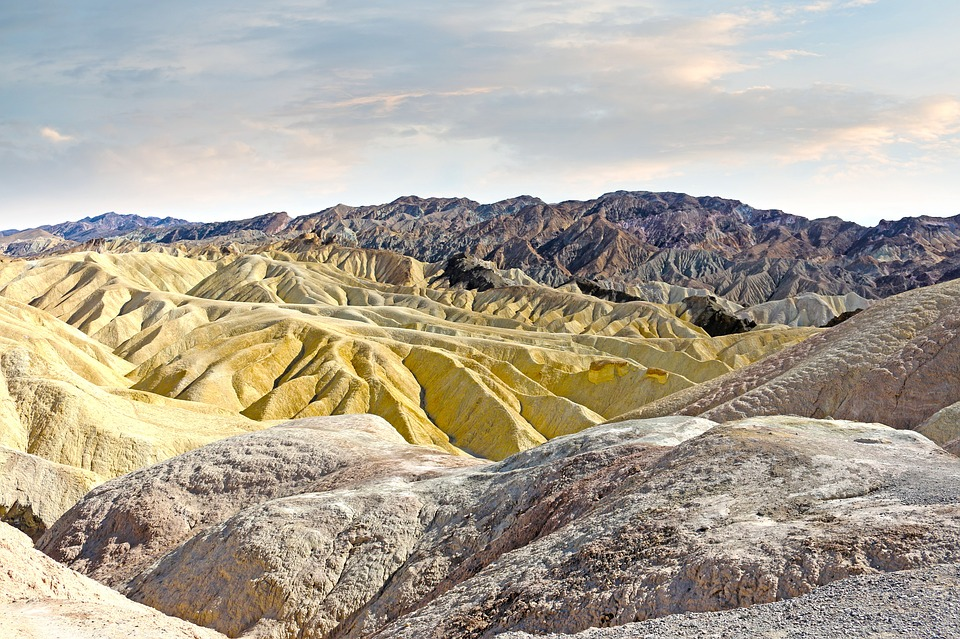
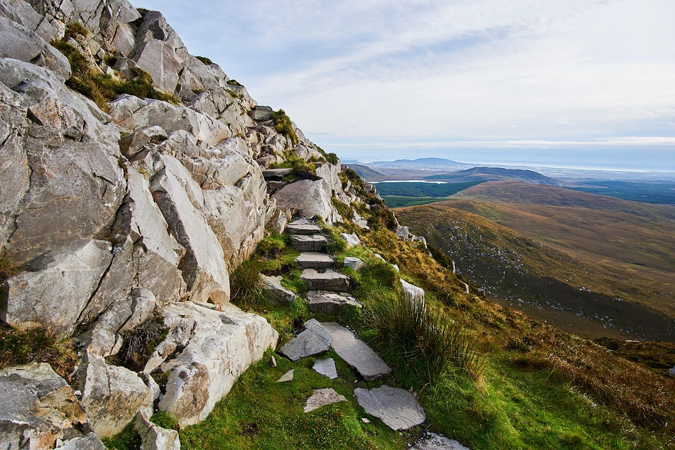

Awaits
Come Explr with us!
A striking mountain landscape is created by the contiguous national parks of Mount Washington, Mount Adams, Mount Jefferson, and Mount Monroe, as well as the provincial parks of Mount Madison, Mount Lafayette, and Mount Pierce. These parks are dotted with mountain peaks, glaciers, lakes, waterfalls, canyons, and limestone caves. There is also Mount Hale, one of the Little River Mountains, which provides hikers with a simple route.
Our Photos


Contact Us
1145 17th Street San Fransico, CA 94606
Email: ExplrLive@go.com